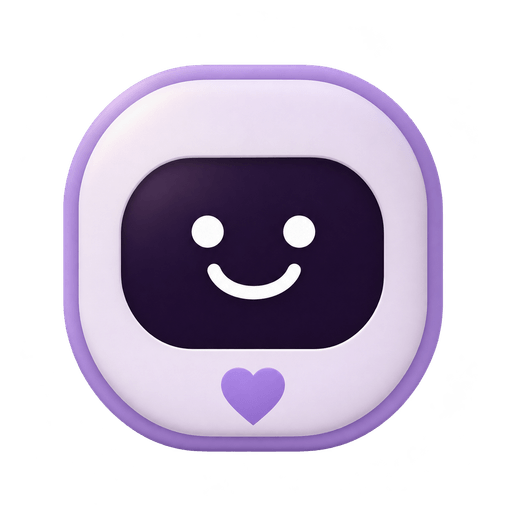
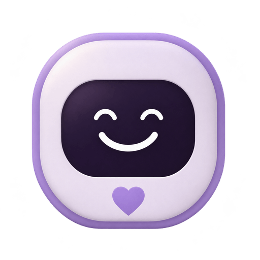
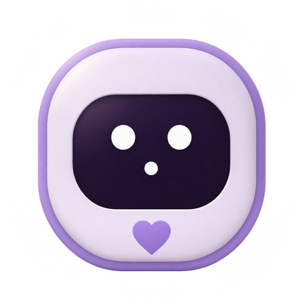
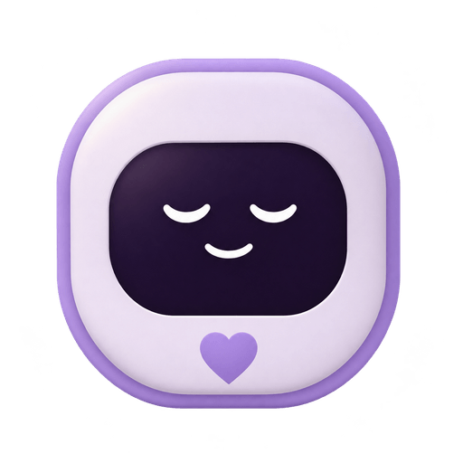

Opción B elegida por Cris: blanco, lila, pantalla oscura y corazón. Cuatro estados, íconos claros y una versión para el teléfono.




SVG propios con trazo redondeado. Cada acción conserva su etiqueta visible.
Versión vectorial simplificada de B.También incluye primer plano transparente para Android.
Paquete de recursos preparado para integración. Las expresiones de 512 px son para bienvenida, festejos y pantallas vacías. La mascota animada conserva su dibujo por código, su parpadeo, su corazón y su boca al hablar.
Instrucciones para Claude